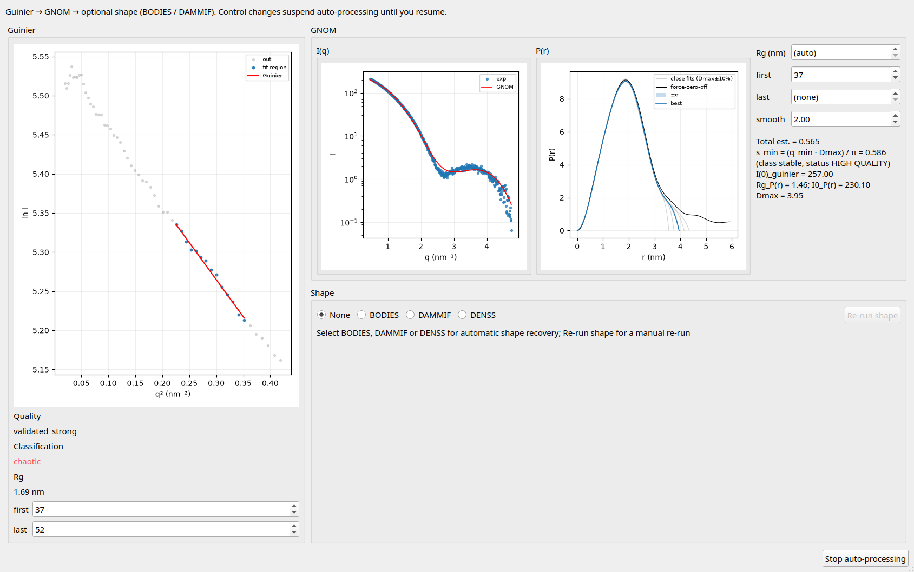
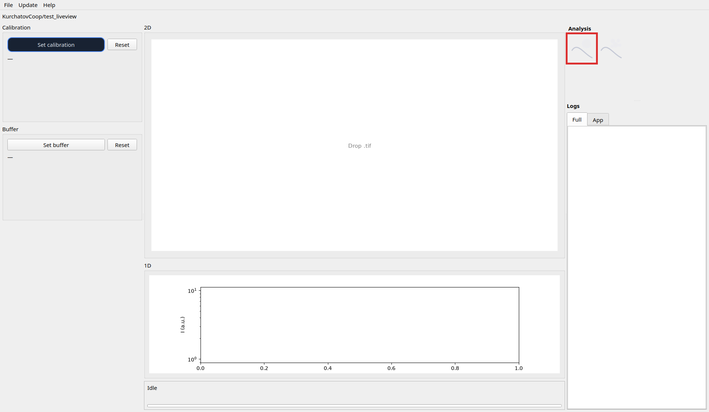

Open this window from the right-column monodisperse icon. While it stays open, new TIFFs that reach a calibrated (and optionally subtracted) 1D profile run Guinier → GNOM (p(r)) → optional shape automatically. Closing the window disarms that chain. Selecting BODIES, DAMMIF, or DENSS configures what shape step follows GNOM for automatic jobs; it does not by itself pause the queue.
Manual edits in Guinier or GNOM pause auto-processing until you Resume auto-processing.
Guinier artifacts for this window live under guinier_mono/ (separate from polydisperse).

Main window right → monodisperse icon → window opens (armed while open).

Edit first / last → auto-processing pauses → Guinier then GNOM re-run for the current profile → Resume auto-processing when ready for new files.
Edit GNOM parameters → GNOM re-runs for the current profile → use Re-run shape if you also need BODIES / DAMMIF / DENSS again → Resume auto-processing if paused.
Under Shape, choose BODIES, DAMMIF, or DENSS (and options as needed). New TIFF jobs include that step after GNOM. Use Re-run shape for the current profile; Open model folder… opens the on-disk 3D outputs.
Stop auto-processing → new files skip analysis until Resume auto-processing.
guinier_mono/<stem>/ — Guinier region / qualityfit_distances/<stem>/ — GNOM .out, p(r) / fit plotsmodel_bodies/, dammif/, or denss/ under the stem when shape is enabled